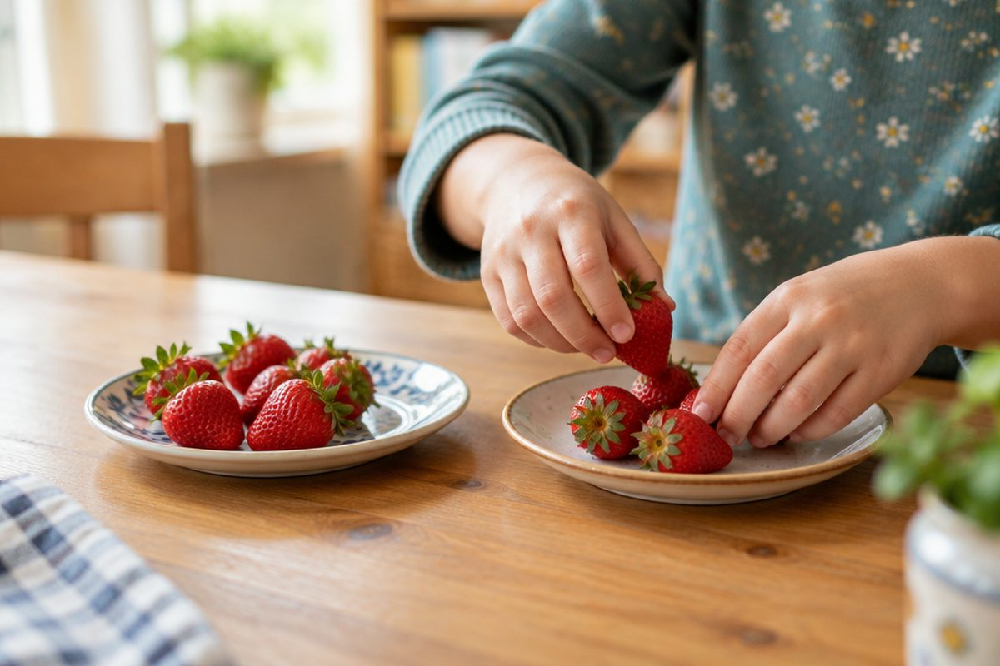

전체 단원 › 1학년 1학기 › 수학 › 덧셈과 뺄셈(한 자리 수)
더하면 몇 개? 빼면 몇 개?

딸기 2개에 3개를 더 받으면 몇 개일까요? 먹고 나면 몇 개가 남을까요? 오늘은 덧셈과 뺄셈을 배워요.
모으기와 가르기
두 수를 합치는 것을 '모으기'라고 해요.
한 수를 두 수로 나누는 것을 '가르기'라고 해요.
와 를 모으면 (5) / 5는 1과 4, 2와 3으로 가를 수 있어요.
더하기: 합치면 늘어나요
더할 때는 '+'를 써요.
'2 더하기 3은 5와 같아요'라고 읽어요.
어떤 수에 0을 더하면 그대로예요.
+ → 2 + 3 = 5
빼기: 덜어 내면 줄어요
뺄 때는 '−'를 써요.
'5 빼기 2는 3과 같아요'라고 읽어요.
누가 몇 개 더 많은지 알아볼 때도 빼요.
에서 2개를 먹으면 → 5 − 2 = 3
이렇게 풀어요: 10을 만들어 더하기
8 + 5처럼 10이 넘을 때는 먼저 10을 만들어요.
5를 2와 3으로 갈라요.
8에 2를 더해 10, 남은 3을 더해 13이에요.
① 8 + 5 → 5를 2와 3으로 가르기 ② 8 + 2 = 10 ③ 10 + 3 = 13 → 8 + 5 = 13
핵심 낱말
- 모으기
- 두 수를 합쳐 하나의 수로 만드는 것
- 가르기
- 한 수를 두 수로 나누는 것
- 덧셈(+)
- 수를 더해 늘어난 수를 구하는 것
- 뺄셈(−)
- 수를 덜어 내 남은 수나 차이를 구하는 것
- =
- '~와 같아요'라는 뜻의 기호
한 줄 정리
- 두 수를 합치면 모으기, 나누면 가르기예요.
- 더하면 늘어나고(+), 빼면 줄어들어요(−).
- 10이 넘을 때는 먼저 10을 만들어 더해요.
학교 교육과정 연결
- [2수01-04] 하나의 수를 두 수로 분해하고 두 수를 하나의 수로 합성하는 활동을 통하여 수 감각을 기른다.
- [2수01-05] 덧셈과 뺄셈이 이루어지는 실생활 상황과 연결하여 덧셈과 뺄셈의 의미를 이해한다.
- [2수01-06] 두 자리 수의 범위에서 덧셈과 뺄셈의 계산 원리를 이해하고 그 계산을 할 수 있다.